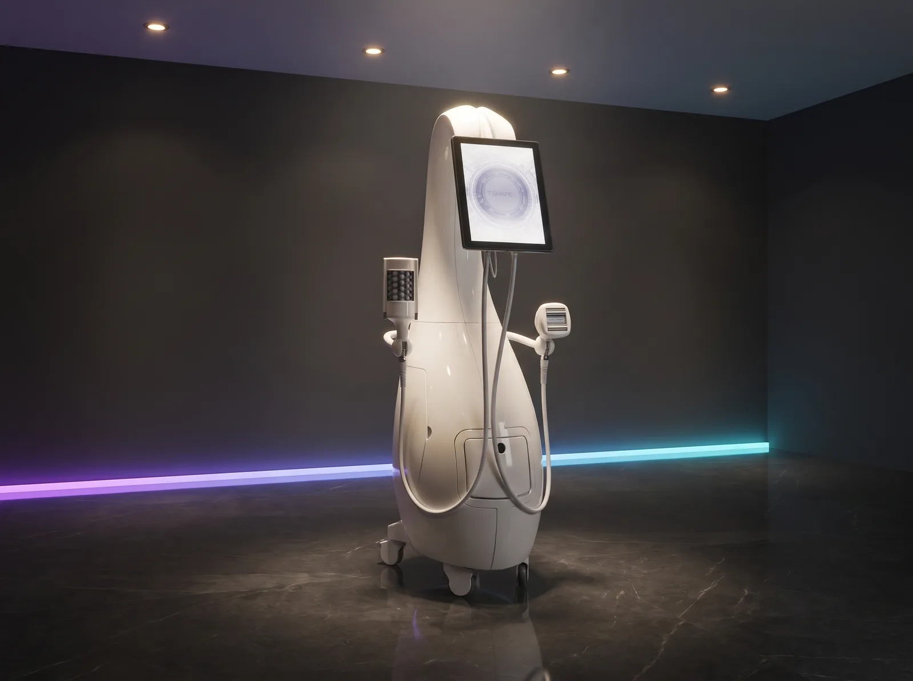
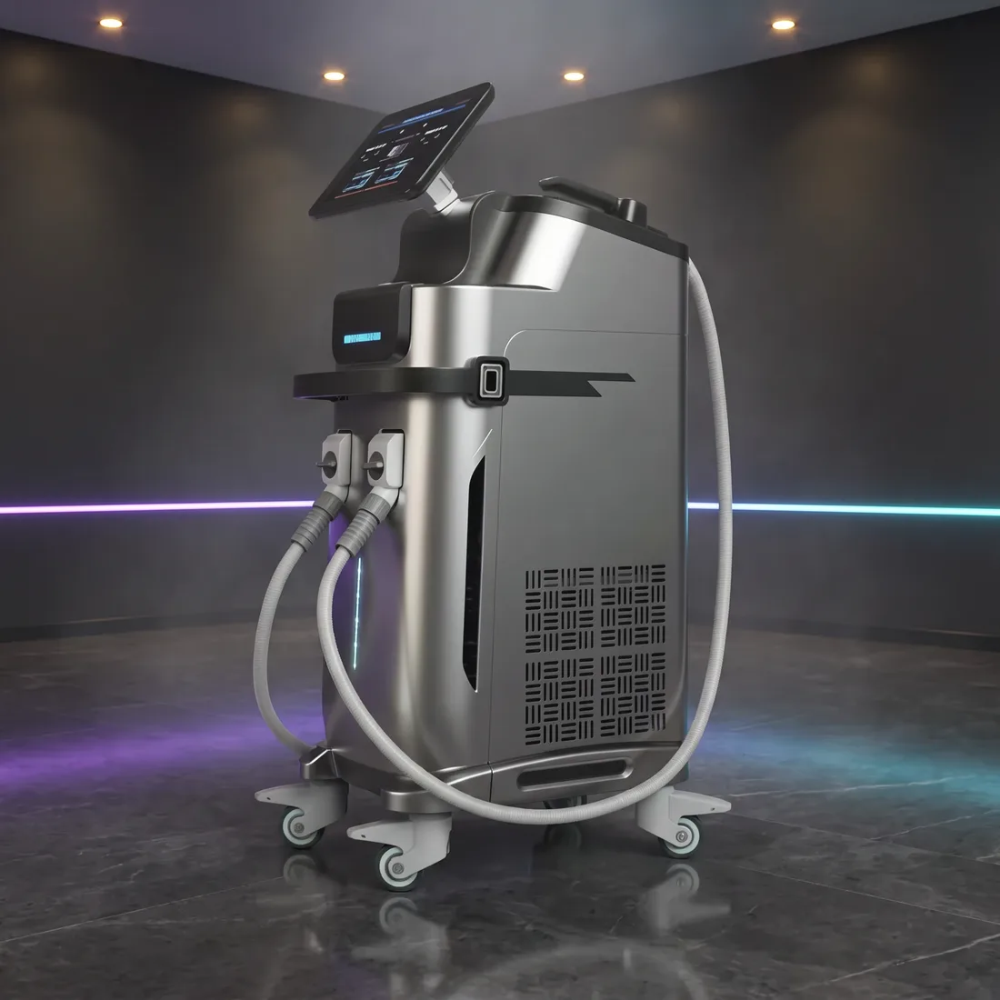
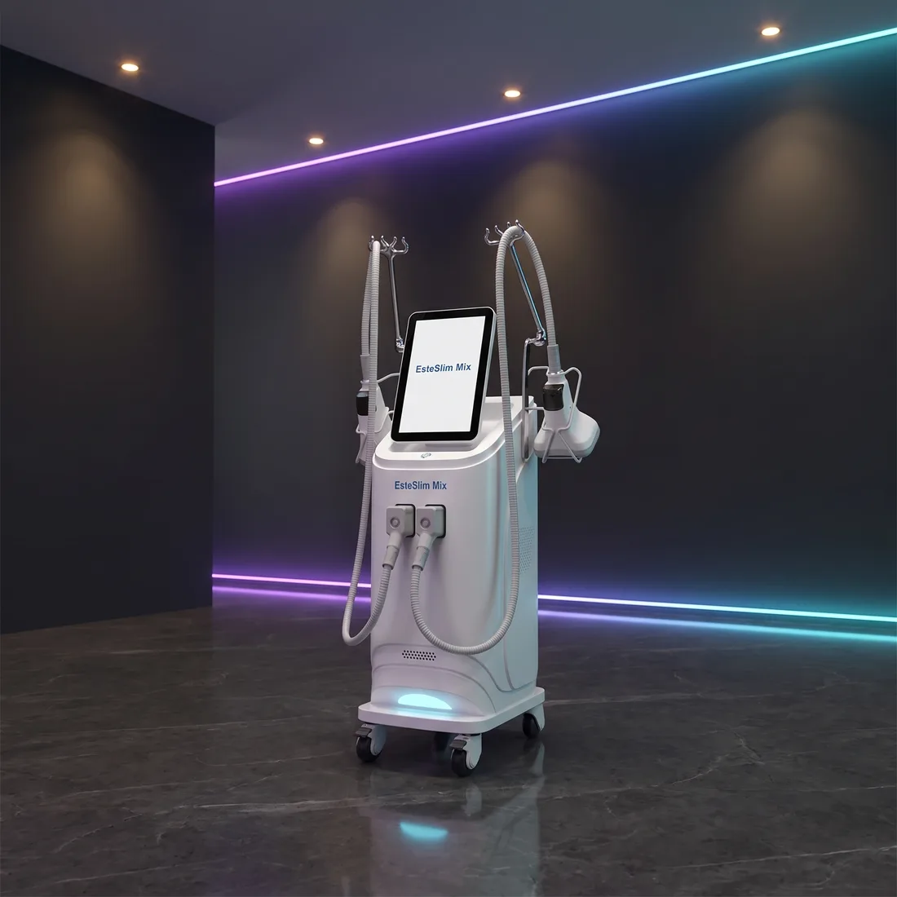
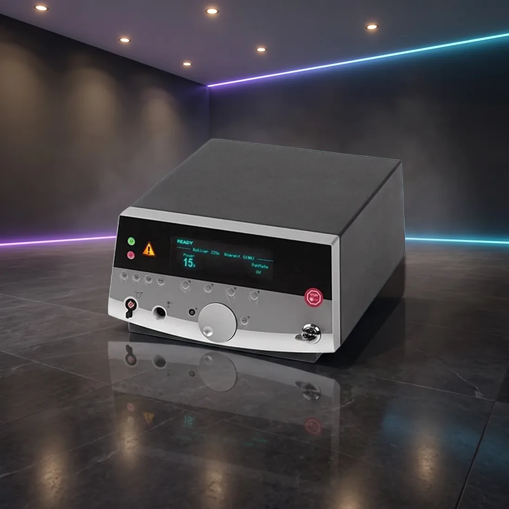

Vücut Şekillendirme & Zayıflama
Soğuk lipoliz, HI-EMT kas uyarımı, radyofrekans ve endolazer ile bölgesel incelme ve kontur protokolleri.

T-Shape 2
5 Teknoloji Bir AradaBipolar RF, LLLT lazer, dinamik vakum, mesosporasyon ve mesosphere tek platformda; FDA 510(k) belgeli.

EsteSculpt Pro
7 Tesla · 3000 WHI-EMT kas uyarımını radyofrekansla birleştirir; tek seansta hem yağ hem kas hedeflenir.

EsteSculpt
30 Dakikada Yoğun KasılmaElektromanyetik alan motor sinir hücrelerini hedefleyerek genel egzersizde ulaşılamayan kasılma yoğunluğu üretir.

EsteSlim
4 Farklı BaşlıkYağ hücrelerini dondurarak apoptoza uğratır; üç ayrı başlık boyutuyla farklı bölgelere uyum sağlar.

EsteSlim Mix
Lipoliz + RF + KavitasyonSoğuk lipoliz, radyofrekans ve kavitasyonu tek gövdede toplayarak seans başına ciro potansiyelini artırır.

MedArt EndoTerapyLazer
1470 nm EndolazerCilt altına fiberle girerek sarkma ve elastikiyet kaybını tek seansta hedefler; 400–1000 µm fiber seçenekleri.

MedArt SmartSculpt Endolazer
1470 nm · 15 WKesintisiz diode lazerle cilt altı lipoliz ve kontur; 0,3–100 Hz frekans aralığında hassas kontrol.
Lazer Epilasyon
Alexandrite, Diode ve Nd:YAG platformlarında, yüksek seans hacmine dayanacak profesyonel epilasyon sistemleri.
DİĞER HATCilt & Medikal Estetik
Fraksiyonel CO2, pikosaniye, BBL, HIFU ve altın iğne teknolojileriyle leke, doku ve gençleştirme protokolleri.
DİĞER HATSoğutma & Aksesuar
Uygulama konforunu ve hasta güvenliğini yükselten soğutma sistemleri ile dalga boyuna özel koruyucu ekipman.
Vücut & Zayıflama hattında doğru cihazı birlikte seçelim
Hedef hasta profilinizi ve günlük seans hacminizi paylaşın; bu hattaki hangi platformun size uyduğunu net söyleyelim.
Ankara ve İstanbul ofislerimizden aynı gün dönüş yapılır.